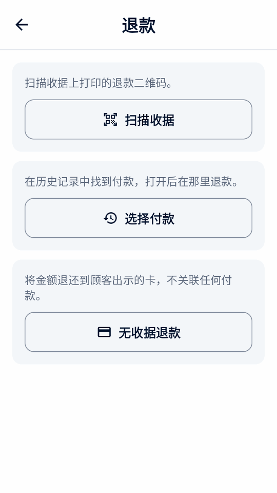
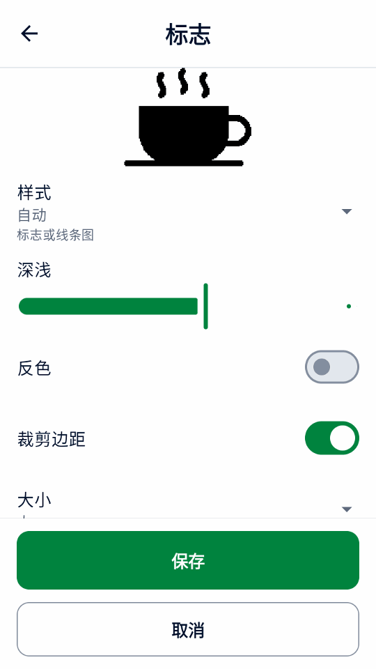
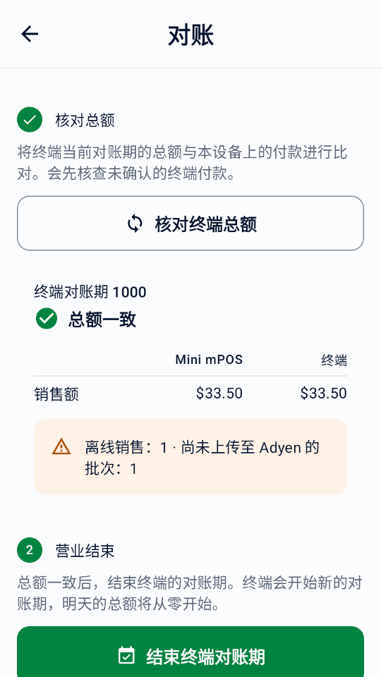

指南
使用 Mini mPOS
完成商户运营设置、收款、交付收据并日结。需要时再添加可选支付功能。
商户运营设置
准备商品、税费和员工权限
设置币种和税费
- 在设置 › 支付中选择商家账户接受线下付款的币种。
- 在设置 › 税中检查税率、价格含税还是结账时加税，以及新商品的默认税率。
设置完成后，“设置 › 支付”可能会建议使用 Adyen 显示的商户账户主要结算币种。这只是建议，并不表示已确认该账户接受此币种的付款。选择后会打开相同的价格检查；保留当前币种则不会更改任何内容。
每个商品都有税率，不征税的商品使用 0% 税率。关闭收取税费会停止征税，但保留税率。
重要
更改币种会保留价格中的数值，不会按汇率换算。更改后请检查商品价格。
添加商品
- 打开设置 › 商品，点按 +。
- 输入名称、价格和税率。可选添加分类和条形码（输入或扫描）。
- 订金商品请开启预授权商品，使其只出现在预授权中。
设置员工 PIN
在设置 › 安全中点按设置 PIN，用管理员 PIN 保护设置和商品，并选择多久后再次锁定。 点按设置经理 PIN保护受保护的操作；管理员 PIN 无法批准这些操作。之后可使用更改管理员 PIN或 移除管理员 PIN。
在经理权限中选择哪些操作需要经理 PIN。相似的操作共用一个开关；有参考退款、无收据退款和现金退款 各有独立开关。本指南中的经理批准均遵循这些选择。
未设置管理员 PIN 时，所有操作都开放。设置管理员 PIN 后，受保护的操作会被阻止，直到设置经理 PIN。删除管理员 PIN 也会删除经理 PIN，但会保留权限选择。多次输错 PIN 会暂时锁定输入。
服务顾客
银行卡收款
- 在首页点按新建销售。点按商品、点按扫描条码，或添加自定义商品。
- 点按收款。核对商品、税费和合计，并填写识别号或电子邮件字段。
- 点按支付。终端（或 Tap to Pay 的 Adyen Payments 应用）会提示购物者付款。
- 等待结果。结果显示前请勿开始另一笔付款。
- 通过打印收据、发送电子收据或分享收据向购物者提供收据（已自动发送时除外）。
说明
根据终端和商户账户，顾客可以插卡或挥卡，也可以用手机或手表感应支付。使用 Tap to Pay 时，Adyen Payments 应用会引导顾客。
警告
结果未知不表示付款失败。再次收款前，请查询原付款。
顾客参考号和保存卡片均为可选；请参阅参考号和已保存的卡片。如需分单或收取现金、 礼品卡或餐券，请参阅可选结账流程。如需让顾客在自己的手机上付款，请使用 付款链接。如果付款被拒绝，请参阅被拒绝的付款。
退款或撤销付款
- 退款
- 适用于已扣款的付款，退还全部或部分金额。
- 撤销（取消）
- 适用于尚未扣款的冻结付款：订金点按取消预授权，待填写小费 的销售点按取消支付。这会释放冻结金额。
退款步骤：
- 在首页点按退款，然后点按扫描收据扫描收据上的退款二维码，或点按选择付款在交易记录中打开原销售。
- 选择全额、指定金额或按商品退款。按商品退款要求本设备保留原销售。
- 确认退款，如有提示则输入经理 PIN。


这些退款关联原付款。已支付的付款链接请在商户后台退款。
拆分的销售会退回到原来的各笔付款。Mini mPOS 会建议每张卡退回多少、需要退还多少现金；点按某笔付款 即可调整。系统先逐张退回银行卡，再退现金，退现金需要经理 PIN。如果某张卡的退款未被接受，则不会继续退款； 请打开该销售查看剩余金额。
对于已报告附加费的销售，退款依次退回购买金额、小费和附加费；全额退款 包含剩余的附加费。
无收据退款
仅在没有可退款的付款时（例如无收据退货）才使用无收据退款。它会把金额退到购物者出示的卡上， 且不关联任何付款，因此 Mini mPOS 无法核实实际付款。错误或重复退款由您承担责任。
请 Adyen 为门店启用无参考退款，并在商户后台设置 Adyen 的退款上限。然后在“设置”›“支付”中开启 允许无收据退款，设置您自己的退款上限和经理 PIN。Adyen 在部分国家/地区以及 扫码钱包上不允许此类退款；Mini mPOS 会检查 Adyen 为终端验证的门店。
点按无收据退款，输入金额，选择原因，确认并用经理 PIN 批准；然后由购物者出示卡片。 退款已批准表示收单机构已立即批准；已请求退款表示 Adyen 已收到请求。交易记录、 收据和每日报告会单独列出这些退款；请手动对账。
如果 Adyen 支持团队设置了退款延迟，请开启已设置退款延迟。在延迟期间打开该退款并点按 取消退款，然后在商户后台查看退款是否已停止。
Adyen: Unreferenced refunds · Adyen: Cancel an unreferenced refund
重要
已请求退款表示 Adyen 已收到请求，不表示购物者已收到款项。请在商户后台确认最终结果。退款结果未知时， 重试前请先查询。
打印、发送电子收据或分享收据
在付款结果或交易记录中点按打印收据或发送电子收据。平板和手机还可点按分享收据，通过 Android 分享菜单发送图片。打印需要配有打印机的终端。
自定义并测试收据
- 在设置 › 收据中填写商家信息、抬头和页脚。也可点按从 Adyen 导入商家信息，查看 Adyen 提供的信息。选择 补全缺失信息保留现有文字，或选择替换现有信息使用获取的商家名称、地址和电话。导入的空白字段保留原值，税号、标题和页脚不变。
- 选择自动打印、何时打印商家联，以及是否显示退款二维码。
- 点按打印测试收据并检查打印效果。屏幕预览无法显示打印机的确切排版。
其他选项：
- 显示税额
- 显示总额中包含或另行加收的税额，不改变实际收取的税额。
- 显示税额明细
- 按税率列出税额。价格含税时，显示所含税额需要开启此项。
- 按税率显示应税金额
- 按税率汇总商品金额，包括 0%。
- 显示识别号
- 默认开启。打印商家识别号及已输入的购物者识别号，便于将收据与付款对应。
- 标记的税率（%）
- 用商品标记及其说明标出该税率的商品。留空则不标记。
- 每行字符宽度
- 默认为 32，适用于较窄的收据纸卷。请通过测试打印选择适合打印机的宽度。
在设置 › 收据 › 标志中选择 PNG、JPEG 或 WebP 图片。如果设备没有文件选择器，可通过 设置助手单独发送标志，或与其他设置一起发送。查看黑白预览：样式可选 自动、标志或照片，并可用深浅、反色和裁剪边距微调。选择大或小的大小后保存。如果标志已包含 商户名称，请关闭打印商户名称。
标志会显示在打印、电子邮件和分享的收据上，包括重新打印的收据。如需调整，请重新选择原始图片；使用“移除标志” 可将其清除。


设置语言
应用支持英语、简体中文、繁体中文、日语、巴西葡萄牙语、西班牙语和法语。设置 › 语言会立即 更改本设备上的应用文字和收据标签；已保存的商家文字和商品名称保持不变。跟随设备使用 Android 为应用 设置的语言。Adyen 的银行卡收据行遵循终端的收据语言。
设置电子收据
允许出站访问您的 SMTP 服务器，通常为 TCP 587（STARTTLS）或 465（SSL/TLS）。
- 打开设置 › 电子收据。选择服务商，或填写 SMTP 服务器、端口、发件人和登录信息。使用 STARTTLS 或 SSL/TLS。
- 发送测试邮件。
- 在同一屏幕上选择何时询问购物者电子邮件，以及是否自动发送收据。
请按服务商说明开通 SMTP 并获取正确的密码：
收据无法打印或发送时，请参阅打印机和邮件问题。
日结
查询付款并完成每日平账
交易记录按日列出付款和退款，并显示每日合计。
每页最多显示七个自然日内的 100 条记录；使用上一步和下一步翻页。搜索范围 涵盖所有保留的交易。
- 按销售、待填写小费、预授权、退款或需处理筛选，并用付款方式筛选卡品牌或钱包。
- 可按识别号、授权码、购物者识别号或电子邮件、卡号后四位、品牌、钱包或确切金额搜索。每个词都需匹配：
visa 34可查找金额为 34 的 Visa 付款。
屏幕上的合计受搜索和筛选影响。冻结的付款（如订金和收据小费）在扣款被受理当日计入销售。
每日平账
- 打开交易记录，筛选需处理并逐一处理；参见结果未知。
- 检查待填写小费和预授权筛选。录入小费，并在冻结到期前为订金扣款或取消。
- 点按日期旁的打印图标，打印本地每日汇总。
- 与商户后台中的 Adyen 报告对账；参见 Adyen 结算对账指南 。
汇总忽略筛选，涵盖整日的销售、已含小费、已受理退款、净额、新增冻结和未解决操作，按币种分列。TEST 和模拟器活动会标明。已支付的付款链接和日期未知的扣款会作为无日期活动单独列出。
重要
本地每日汇总只包含本设备保存的付款，不是 Adyen 的最终结算，也不包含其他设备。以商户后台为准。
警告
在 LIVE、TEST 和模拟器之间切换会永久删除本设备上的所有交易记录和报告数据。存在未完成付款时，应用会再次警告：Adyen 上的任何操作都不会被取消，但本地恢复和安全重试数据将丢失。商品和设置保留。
核对终端总额并结束周期
- 在主页点按对账，然后点按核对终端总额。Mini mPOS 会先核查待处理或结果未知的终端付款，然后并排显示 Mini mPOS 与终端的销售额和退款。
- 如果显示总额不一致 ，请在交易记录中处理需要关注的付款后再次核对。终端对账期不一定等于一个自然日；其他设备使用同一终端或本地记录缺失都可能导致差异。付款链接、令牌扣款和示例记录不属于终端付款。
- 营业结束时，点按结束终端对账期并确认，在要求时完成经理批准。终端会结束当前对账期并开始新的对账期；此操作无法撤销。
- 如有需要，点按打印今日报表打印本地每日汇总。
Tap to Pay 不支持此功能。总额一致或周期已结束并不代表已结算、退款已完成或离线交易已上传；最终结果以商户后台 为准。


管理设备与数据
设置更多设备并管理数据
- 在已配置的设备上打开设置 › 数据与传输 › 共享至另一台设备。选择商品目录、设置和／或密码与密钥，然后点按显示二维码。
- 在新设备上选择从另一台设备设置，按任意顺序扫描所有二维码。选择合并或替换其商品目录。
- 输入第一台设备显示的 12 位传输码，即使只复制商品或设置也需要。请将传输码与二维码分开保管。点按导入。
- 检查价格和税费，在设置 › 终端中测试连接，并打印测试收据。
新设备保留自己的支付目标、终端、环境和 Tap to Pay 注册。只有 Adyen 为另一台终端分配了相同密钥时，共享密钥才可用于该终端。
重要
这是一次性复制，不是同步，也不是交易记录备份。各设备保留各自的付款。在 Android 中清除应用数据会删除设备上的全部商品、设置和交易记录。
在设置 › 数据与传输中设置交易保留时长或点按清除已完成的交易记录；未解决的付款始终保留。
在平板或手机上，Mini mPOS 会在启动时检查新版本。如果首页显示更新，点按后会在浏览器中打开 APK，再安装下载的文件。Adyen 终端通过商户后台更新，不会显示此提示。您也可以获取最新发布版本并按 安装步骤操作。保持相同签名来源，直接覆盖安装；不要卸载应用或清除数据。
导入问题请参阅 PIN 和传输问题。